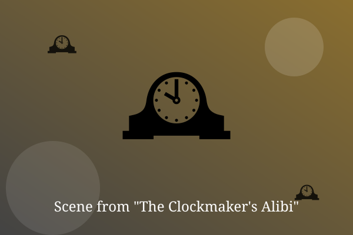

Chapter 1: Nine Fourteen

On Tuesday night, all forty clocks in Marlow Street stopped at exactly 9:14. On Wednesday morning, the clockmaker was found in his shop.
Inspector Pell noticed that his watch was still ticking. Whoever stopped the clocks had missed one.
He wound it, listened, and smiled. The tick was a few seconds too slow, and that was the first clue.
— End of Chapter —